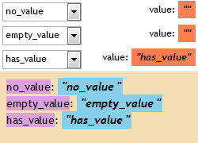
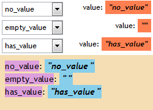

根据 HTML4.01 规范中的描述，OPTION 元素的 value 属性指定了其对象下拉菜单选项的初始值 (initial value)，若 value 属性未被设定，则初始值为 OPTION 元素的内容。
在 HTML4 中存在一种布尔属性，例如 OPTION 元素的 selected
属性，其出现在元素的起始标签中时代表此属性为"真"，否则为"假"。通常会将这种属性名作为属性值书写，如 <OPTION
selected="selected">...contents...</OPTION>。而 HTML
还为布尔属性提供了一种最小形式的书写方法，如：<OPTION selected>。
关于 BUTTON 元素的更多信息，请参考 HTML4.01 规范 17.6 The SELECT, OPTGROUP, and OPTION elements 及 3.3.4 Attribute declarations 中的内容。
在 IE6 IE7 IE8 中 若 OPTION 元素仅包含属性名、没有属性值的 value 属性，则浏览器会将 OPTION 元素的内容文提交到服务端。而其他浏览器会将空字符串提交到服务端。
这会导致当 OPTION 元素仅包含属性名、没有属性值的 value 属性时，各浏览器提交到服务端的表单数据出现差异，可能造成数据丢失。
| IE6 IE7 IE8 |
|---|
在 HTML 规范中，仅仅布尔类型的属性存在省略属性名的最简写法。
根据问题描述构建如下测试样例：option.html
<!DOCTYPE html> <html> <head> <style> * { margin:0; font-size:12px;
font-family:'Trebuchet MS'; } form { width:250px; } form div { overflow:hidden; zoom:1; padding:3px; }
form div span { float:right; } form div span em { font-weight:bold; background:coral; padding:2px; }
select { width:100px; height:24px; } iframe { width:250px; height:90px; } </style> </head>
<body abc> <form action="submit.php" target="iframe"> <div>
<span id="i1"></span> <select id="s1" name="no_value">
<option id="o1">no_value</option> </select>
</div> <div> <span id="i2"></span> <select id="s2"
name="empty_value"> <option id="o2" value>empty_value</option> </select> </div> <div>
<span id="i3"></span> <select id="s3" name="has_value">
<option id="o3" value="has_value">has_value</option> </select> </div>
</form> <iframe name="iframe" frameborder="0"></iframe>
<script> document.forms[0].submit(); document.getElementById('i1').innerHTML = 'value:
<em> "' + document.getElementById('s1').value + '" </em>';
document.getElementById('i2').innerHTML = 'value: <em> "' +
document.getElementById('s2').value + '" </em>';
document.getElementById('i3').innerHTML = 'value: <em> "' +
document.getElementById('s3').value + '" </em>'; </script> </body>
</html>
页面中 FORM 元素内有三个 SELECT 元素，各包含一个 OPTION 元素，区别为这三个 OPTION 元素分别没有设定 value 属性、设定了仅包含属性名没有属性值的 value 属性、设定了正确的 value 属性值。
FORM 会自动提交到服务端 submit.php 并显示出服务端接收到的提交信息。
<style> body { margin:8px; font:14px/1.5 "Trebuchet MS"; background:wheat; } span {
background:plum; } em { font-weight:bold; background:skyblue; padding:2px; } </style> <?php
function get($param) { if (isset($_GET[$param])) { echo '<span>' . $param . '</span>:
<em> "' . $_GET[$param] . ' "</em><br />'; } else { echo
'<span>' . $param . '</span>: <em> N/A </em><br />'; } }
get('no_value'); get('empty_value'); get('has_value'); ?>
这段代码在各浏览器中运行效果为：
| IE6 IE7 IE8 | Firefox Chrome Safari Opera |
|---|---|
|  |  |
可见，若 OPTION 元素没有设定 value 属性，则所有浏览器均会将 OPTION 元素的内容文本提交到服务端。若 OPTION 元素设定了明确的 value 属性，各浏览器没有任何差异。
在使用 OPTION 元素时避免出现其仅包含属性名、没有属性值的 value 属性的情况，若需要设定空的 value 属性值可以写做 <OPTION
value="">。
| 操作系统版本: | Windows 7 Ultimate build 7600 |
|---|---|
| 浏览器版本: |
IE6
IE7 IE8 Firefox 3.6.10 Chrome 7.0.544.0 dev Safari 5.0.2 Opera 10.62 |
| 测试页面: | option.html |
| 本文更新时间: | 2010-10-12 |
OPTION value submit attribute 属性 SELECT 选项